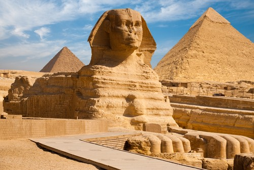
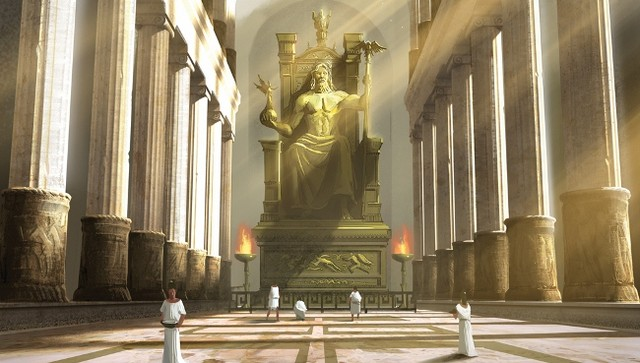
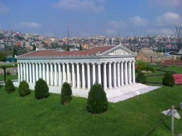
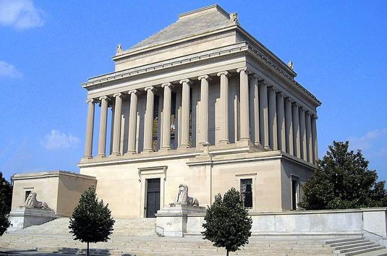
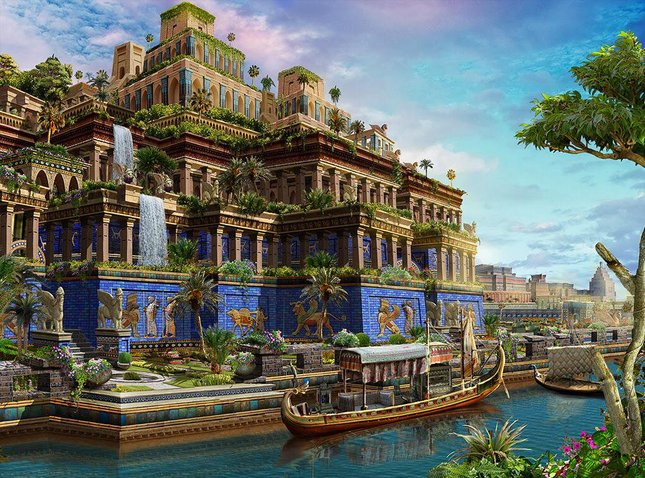
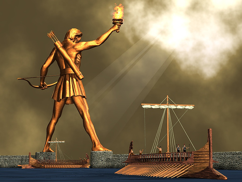
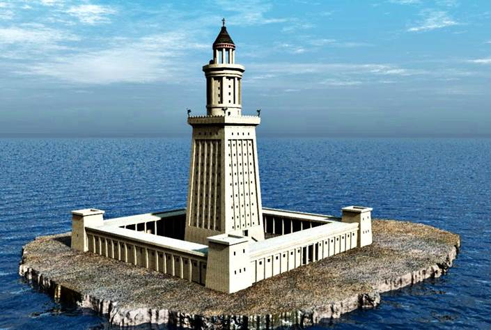

|  | Пирамидите в Гиза са разположени на платото Гиза в Египет, на западния бряг на река Нил. Основното предназначение на египетските пирамиди е съхранението на останките на починали фараони. Разположени са на 9 километра от град Гиза и на 25 километра югозападно от Кайро. Групата археологически паметници включва трите големи пирамиди – Хеопсовата пирамида, Пирамидата на Хефрен и Пирамидата на Микерин – както и няколко по-малки пирамиди, разположени в близост до тях. Те са най-старият и единственият запазен до днес паметник от 7-те чудеса на Античния свят. Пирамидите са част от Некропола в Гиза, комплексен археологически обект, включващ още Големия сфинкс, останки от древно селище, обслужвало комплекса, както и множество по-малки религиозни и погребални паметници. През 1979 година целият некропол е обявен от ЮНЕСКО за част от световното наследство. |
|  | Олимпия била важен религиозен център на Древна Гърция. Именно там Зевс е победил кръвожадния Кронос. През 5 век пр.н.е. гражданите на Олимпия решили да построят храм на Зевс. Той бил 64 метра на дължина и 28 на ширина. Височината на вътрешното помещение била 20 метра. Статуята на Зевс, създадена около 435 г. пр.н.е., била поставена в дъното на храма. Според изворите е била висока около 12 метра и създавала впечатлението, че ако Зевс стане, ще разруши тавана. Била изработена от дърво, което било покрито с нежно-розова слонова кост, а дрехите на Зевс били от златни листи. В дясната си ръка държал златна статуя висока около 5 метра на богинята на победата Нике, а в лявата си – скиптър. |
|  | Сградата явно е била впечатляваща. Филон Византийски пише – „Виждал съм Висящите градини на Вавилон, статуята на Зевс Олимпийски, Родоския колос, Пирамидите и храмът на Мавзол, но когато видях Храмът в Ефес да се извисява в облаците, всички други неща избледняха“. Първият храм на богинята Артемида вероятно е бил построен около 800 пр.н.е. на калния терен близо до реката в Ефес. Ефеската Артемида, понякога наричана и Диана, не е била същата богиня, която е почитана в Древна Гърция. Докато гръцката е богиня на лова, тази е богиня на плодородието и често е изобразявана с няколко гърди – символ на плодовитостта. |
|  | Mавзолеят в Халикарнас е огромна антична гробница на цар Мавзол, владетел на Кария. Думата „мавзолей“ произлиза от името на цар Мавзол и днес се използва за всяка голяма гробница, в която живите почитат балсамираното тяло на погребания. Построен е през 353 – 351 г. пр.н.е. от съпругата му Артемизия, която е и негова сестра. Представлява солиден храм, заобиколен от 36 колони в йонийски стил. Халикарнас е най-големият град на Кария и е на територията на днешен Бодрум, (Турция). Мавзолеят е бил висок 45 метра (135 стъпки). Бил е богато украсен с релефи и скулптури, дело на четирима прочути гръцки майстори – Скопас, Леохар, Тимотей и Бриаксис. В Британския музей са изложени много фрагменти, като за две от статуите се предполага, че са на Мавзол и Артемизия. |
|  | Висящите градини на Семирамида не са открити. Вероятно са били построени във Вавилон, днешен Ирак. Повечето сведения сочат, че са построени около 575 пр. Хр. от цар Навуходоносор II, който управлява града 43 години. Друга теория гласи, че са построени от асирийската царица Семирамида, по време на петгодишното ѝ управление. Представляват терасирани и изкуствено напоявани градини. Според легендата, Навуходоносор ги построява, за да не тъгува по дома си и неговата съпруга – персийската принцеса Амитис, която е родом от планините. Откритите след археологически разкопки находки в Ниневия, град в северен Ирак, карат специалистите да проучват възможността градините да са били разположени в град Вавилон. |
|  | Родоският колос е бронзова статуя на бога на слънцето Хелиос, издигната в пристанището на остров Родос в Егейско море. Издигала се е на височина от около 34 метра и е била една от най-високите статуи в древността. Статуята е една от Седемте чудеса на света. Статуята е дело на Харес от Линдос и е построена в периода между 292 г. и 280 г. пр.н.е.След разпада на държавата на Александър Македонски, управлението на Родос поел Птолемей I Сотер. След неговото утвърждаване в Египет, той сключил с Родос съюз, контролиращ търговията в източното Средиземноморие. През 305 пр.н.е. синът на другия диадох Антигон I Монофталм – Деметрий I Полиоркет – обсадил Родос с войска от 40 000 души. Държал главния град на острова в обсада цяла година. Накрая бил принуден да отстъпи пред приближаващия флот на Птолемей. |
|  | Фарът е представлявал кула с височина около 120 – 140 m и за времето си е бил от най-високите конструкции, създадени от човека. Архитект на фара е Сострат Книдски. Изграждането му е отнело 5 години. Бил е построен от бял мрамор и е бил изграден с трегери, а не със сводове. Имал е три етажа. Най-долният е представлявал правоъгълна кула с квадратна основа със страна 30 m и с височина между 55 и 65 m. Четирите ѝ стени били обърнати към четирите посоки на света. Следва вторият етаж, който е бил с осмоъгълна форма, по направленията на осемте главни вятъра. Неговата височина била около 40 m. Най-горният етаж, висок 8 m, бил под формата на цилиндрична колонада – 8 колони носели купол, увенчан с 8-метрова бронзова статуя на повелителя на моретата Посейдон (или на Зевс по други източници). В горната част на етажа имало метално вдлъбнато огледало, което денем отразявало слънчевата светлина, а нощем – светлината на горящ катран или масло. |